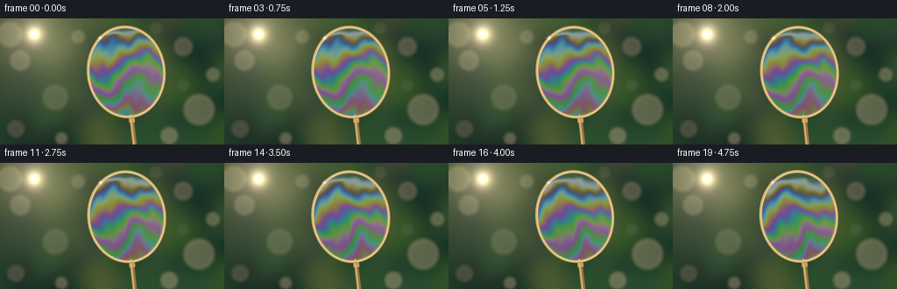
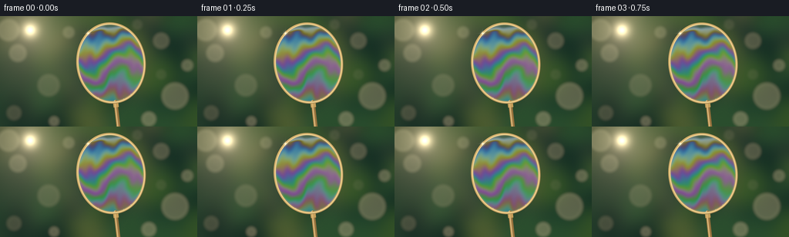

CODING AGENTS AS PIXEL WORLD MODELS
traex/GPT-6.1-Sol · phygen_083
点击播放 · 原生 RGB 像素
逐轮保存的候选
回放视频、检查图与代码变化。
每份候选均可单独播放。实际图片检查记录在下方工具轨迹中。
候选 01播放与检查图
点击播放 · 原生 RGB 像素


展开代码变化
--- 上一保存版本
+++ 本次保存版本
@@ -0,0 +1,197 @@
+"""Procedural macro photograph animation of a sunlit soap-film wand.
+
+Only analytic geometry, thin-film optics, numpy and Pillow are used.
+"""
+from pathlib import Path
+import json
+import numpy as np
+from PIL import Image, ImageDraw, ImageFilter
+import artifact_io
+
+
+ROOT = Path(__file__).resolve().parent
+SPEC = json.loads((ROOT / 'task_spec.json').read_text())
+W, H = SPEC['width'], SPEC['height']
+S = 3
+WW, HH = W * S, H * S
+Y, X = np.mgrid[0:HH, 0:WW].astype(np.float32) / S
+RNG = np.random.default_rng(418)
+
+
+def smoothstep(a, b, value):
+ q = np.clip((value-a)/(b-a), 0, 1)
+ return q*q*(3-2*q)
+
+
+def linear(rgb):
+ return np.power(np.clip(rgb, 0, 1), 2.2)
+
+
+def make_background():
+ # Distant foliage, resolved as overlapping out-of-focus light and shade.
+ canvas = Image.new('RGB', (WW, HH), (31, 54, 35))
+ draw = ImageDraw.Draw(canvas)
+ for _ in range(100):
+ cx, cy = RNG.uniform(-40, W+40), RNG.uniform(-30, H+40)
+ rx, ry = RNG.uniform(7, 34), RNG.uniform(9, 47)
+ choices = [(30, 63, 42), (43, 79, 46), (54, 86, 40),
+ (74, 91, 46), (21, 47, 36), (103, 105, 61),
+ (42, 64, 46), (34, 50, 44)]
+ color = choices[RNG.integers(len(choices))]
+ draw.ellipse(tuple(int(z*S) for z in (cx-rx, cy-ry, cx+rx, cy+ry)), fill=color)
+ canvas = canvas.filter(ImageFilter.GaussianBlur(10*S))
+ bg = linear(np.asarray(canvas).astype(np.float32)/255)
+ # Bokeh circles have soft edges and gently bright rims, not hard spots.
+ for cx, cy, r, strength in [
+ (23, 48, 10, .12), (63, 90, 13, .068), (209, 32, 9, .085),
+ (227, 104, 16, .12), (193, 134, 8, .14), (18, 126, 8, .06),
+ (89, 21, 6, .10), (243, 64, 6, .12), (70, 137, 5, .12),
+ (11, 18, 13, .13), (178, 11, 5, .035), (209, 76, 5, .025)]:
+ dist = np.sqrt((X-cx)**2+(Y-cy)**2)
+ disk = 1-smoothstep(r-2.4, r+4.5, dist)
+ edge = np.exp(-((dist-r)/2.8)**2)
+ bg += (disk*.86+edge*.16)[..., None]*strength*np.array([1.0, .87, .52])
+ # Sun outside the focus plane, near the upper left of the shot.
+ sun_r2 = (X-39)**2+(Y-18)**2
+ for radius, strength in [(66, .105), (26, .17), (9.5, .95), (4.5, .9)]:
+ bg += np.exp(-sun_r2/(radius*radius))[..., None]*strength*np.array([1., .82, .51])
+ # Subtle shafts of warm backlight.
+ ray = np.exp(-((X-39-.72*(Y-18))/23)**2)*np.exp(-np.maximum(Y-18, 0)/170)
+ bg += ray[..., None]*np.array([.018, .013, .006])
+ vignette = 1-.17*((X-W*.5)/(W*.7))**2-.14*((Y-H*.45)/(H*.85))**2
+ return bg * vignette[..., None]
+
+
+BG = make_background()
+
+
+def over(base, color, mask):
+ return base*(1-mask[..., None])+np.asarray(color)*mask[..., None]
+
+
+def segment_distance(x, y, ax, ay, bx, by):
+ dx, dy = bx-ax, by-ay
+ t = np.clip(((x-ax)*dx+(y-ay)*dy)/(dx*dx+dy*dy), 0, 1)
+ return np.hypot(x-(ax+t*dx), y-(ay+t*dy)), t
+
+
+def render(t):
+ img = BG.copy()
+ cx = 144 + .6*np.sin(.75*t)
+ cy = 61 + .35*np.sin(.68*t)
+ angle = -.115 + .006*np.sin(.85*t)
+ ca, sa = np.cos(angle), np.sin(angle)
+ u = ca*(X-cx)+sa*(Y-cy)
+ v = -sa*(X-cx)+ca*(Y-cy)
+ a, b = 43.5, 51.5
+ rr = np.sqrt((u/a)**2+(v/b)**2)
+ # Distance to the elliptical centerline, in image pixels.
+ gradient = np.sqrt((u/(a*a))**2+(v/(b*b))**2)/np.maximum(rr, 1e-5)
+ edge_distance = (rr-1)/np.maximum(gradient, .015)
+ inside = 1-smoothstep(-1.7, -1.15, edge_distance)
+
+ # Fluid coordinate: slow gravitational drainage plus moving convection.
+ px, py = u/a, v/b
+ qx, qy = px.copy(), py.copy()
+ for ex, ey, rad, turn in [(-.38, .12, .55, .62), (.39, .44, .48, -.72),
+ (.36, -.4, .40, .24), (-.48, .64, .28, -.35)]:
+ dx, dy = qx-ex, qy-ey
+ rot = turn*np.exp(-(dx*dx+dy*dy)/(rad*rad))*(.75+.25*np.sin(.6*t))
+ cr, sr = np.cos(rot), np.sin(rot)
+ qx, qy = ex+cr*dx-sr*dy, ey+sr*dx+cr*dy
+ flow = qy + .09*np.sin(4.8*qx+3*qy-.52*t)
+ flow += .042*np.sin(11*qx-4*qy+.38*t)
+ flow += .018*np.sin(18*qx+9*qy-.62*t)
+ depth = np.clip((flow+1)/2, 0, 1.16)
+ thickness = 66 + 895*depth**.92 - 21*t
+ thickness += 40*np.sin(3.2*qx-2.1*qy+.28*t)
+ thickness = np.maximum(thickness, 22)
+ # A thin dark/silver cap builds as the film drains towards its lower edge.
+ cap = 1-smoothstep(-.95+.012*t, -.82+.012*t, py)
+ thickness = thickness*(1-.75*cap)
+ # Slightly bowed surface changes interference without becoming a bubble.
+ incidence_cos = .94 + .035*np.sin(2*qx+1.5*qy-.35*t)
+ reflection = np.zeros((HH, WW, 3), np.float32)
+ wavelengths = [[600., 625., 650.], [515., 540., 565.], [435., 455., 475.]]
+ fresnel = .024
+ for channel, waves in enumerate(wavelengths):
+ for wl, weight in zip(waves, [.25, .5, .25]):
+ phase = 4*np.pi*1.333*thickness*incidence_cos/wl
+ interference = 2*fresnel*(1-np.cos(phase))/(1+fresnel*fresnel-2*fresnel*np.cos(phase))
+ reflection[..., channel] += weight*interference
+ sky = np.array([2.3, 2.65, 3.05], np.float32)
+ # Broad reflected daylight on the flat, almost invisible sheet.
+ illumination = .98 + .22*np.exp(-((px+.5)**2+(py+.55)**2)/.45)
+ film = BG*(1-reflection*.85)+reflection*sky*illumination[..., None]
+ # Faint soft reflected cloud across the upper part of the film.
+ cloud = np.exp(-((py+.58+.18*np.sin(3*px))/.105)**2)
+ film += cloud[..., None]*.012*np.array([.8, .88, 1.0])
+ # A fluid meniscus at the hoop; it is a little thicker and brighter.
+ wet_edge = np.exp(-((edge_distance+2.0)/.53)**2)
+ film += wet_edge[..., None]*np.array([.055, .065, .049])
+ img = over(img, film, inside)
+
+ # Handle and collar, in the same coordinate system as the loop.
+ d, along = segment_distance(u, v, 0, 50.9, 0, 104)
+ handle_mask = 1-smoothstep(2.3, 2.65, d)
+ handle_color = np.empty_like(img)
+ side = np.clip(u/2.5, -1, 1)
+ shine = np.exp(-((u+.8)/.65)**2)
+ handle_color[...] = np.array([.43, .235, .061])
+ handle_color *= (.86-.22*side)[..., None]
+ handle_color += shine[..., None]*np.array([.39, .33, .18])
+ img = over(img, handle_color, handle_mask)
+ collar_mask = (1-smoothstep(3.2, 3.6, np.abs(u)))*smoothstep(49.9, 50.8, v)*(1-smoothstep(57.7, 58.4, v))
+ img = over(img, np.array([.57, .355, .105]), collar_mask)
+ collar_line = collar_mask*np.exp(-((u+.95)/.65)**2)
+ img += collar_line[..., None]*np.array([.2, .16, .09])
+
+ # Rounded amber plastic hoop. The shading is that of a tube, not a flat outline.
+ radius = 1.58
+ ring_mask = 1-smoothstep(radius-.14, radius+.23, np.abs(edge_distance))
+ normal_x = (u/(a*a))/np.maximum(gradient*rr, 1e-5)
+ normal_y = (v/(b*b))/np.maximum(gradient*rr, 1e-5)
+ light_side = -.65*normal_x-.75*normal_y
+ cross = np.clip(edge_distance/radius, -1, 1)
+ tube_front = np.sqrt(np.maximum(1-cross*cross, 0))
+ diffuse = .38+.37*tube_front+.18*light_side*cross
+ hoop = diffuse[..., None]*np.array([.87, .58, .20])
+ highlight = np.exp(-((cross+.27+.25*light_side)/.24)**2)
+ hoop += highlight[..., None]*np.array([.38, .37, .23])
+ # Sunward arc is nearly white, with golden shaded edges.
+ lit_arc = smoothstep(.12, .95, light_side)
+ hoop += (highlight*lit_arc)[..., None]*np.array([.20, .20, .13])
+ img = over(img, hoop, ring_mask)
+ # Fine moisture beads, hugging the lower inner edge of the rim.
+ for theta, size in [(1.05, .65), (1.31, .54), (1.61, .74), (2.1, .48), (.55, .40)]:
+ bx, by = (a-1.2)*np.cos(theta), (b-1.3)*np.sin(theta)
+ dist = np.hypot(u-bx, v-by)
+ bead = 1-smoothstep(size-.15, size+.2, dist)
+ img = over(img, np.array([.54, .56, .35]), bead*.62)
+ img += np.exp(-((u-bx+.18)**2+(v-by+.2)**2)/.055)[..., None]*np.array([.34, .34, .25])
+
+ # Small sun glint on the upper-left edge, with restrained optical bloom.
+ th = -2.19
+ gu, gv = a*np.cos(th), b*np.sin(th)
+ gx, gy = cx+ca*gu-sa*gv, cy+sa*gu+ca*gv
+ dx, dy = X-gx, Y-gy
+ strength = .84+.10*np.sin(.9*t)
+ glint = .34*np.exp(-(dx*dx+dy*dy)/4.2)
+ glint += 1.7*np.exp(-(dx*dx+dy*dy)/.26)
+ glint += .24*np.exp(-(dx/.19)**2-(dy/4.1)**2)
+ glint += .22*np.exp(-(dy/.2)**2-(dx/4.5)**2)
+ img += glint[..., None]*strength*np.array([1.0, .92, .7])
+ # Gentle sensor grain, held spatially stable to avoid temporal flickering.
+ srgb = np.power(np.clip(img, 0, 1), 1/2.2)
+ srgb += GRAIN[..., None]
+ frame = Image.fromarray(np.uint8(np.clip(srgb*255+.5, 0, 255)))
+ return np.asarray(frame.resize((W, H), Image.Resampling.LANCZOS))
+
+
+GRAIN = RNG.normal(0, .0017, (HH, WW)).astype(np.float32)
+
+
+if __name__ == '__main__':
+ frames = np.stack([render(i/SPEC['fps']) for i in range(SPEC['frames'])])
+ artifact_io.save(frames, ROOT)
+ print(f'Saved {len(frames)} RGB frames at {W}x{H}, {SPEC["fps"]} fps.')
可观测工具轨迹
实际执行的命令与返回图片。
命令 1exit 0
/bin/bash -lc "ls -la && cat prompt.txt && printf '\\n---RULES---\\n' && cat GENERATION_RULES.md && printf '\\n---SPEC---\\n' && cat task_spec.json"
命令 2exit 0
/bin/bash -lc "cat artifact_io.py && python - <<'PY'
import numpy, PIL
print('numpy and PIL available')
PY"命令 3exit 0
/bin/bash -lc "command -v ffmpeg || true; python - <<'PY'
import importlib.util
print('scipy',bool(importlib.util.find_spec('scipy')))
PY"命令 4exit 0
/bin/bash -lc "python generate.py && python - <<'PY'
from pathlib import Path
import numpy as np
from PIL import Image
p = np.load('pixels.npz')['pixels']
f = np.array(Image.open('frames/00.png'))
print('Packed video:', p.shape, p.dtype)
print('Frame:',f.shape, f.dtype)
print('Temporal changed fraction:',float(np.mean(p[:,:,1:]"'!=p[:,:,:-1])))
print('"'Artifacts:', ', '.join(s for s in ['generate.py','pixels.npz','index.html','inspection.png','transition_check.png'] if Path(s).is_file()))
print('PNG frames:', len(list(Path('frames').glob('*.png'))))
PY"保存候选 1 份；完成命令 4 次；可验证图片返回 0 张。原始 API 响应与完整日志保留在本地。